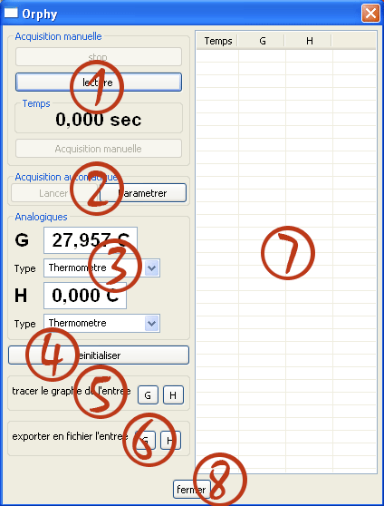
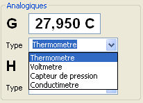
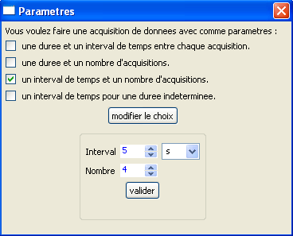
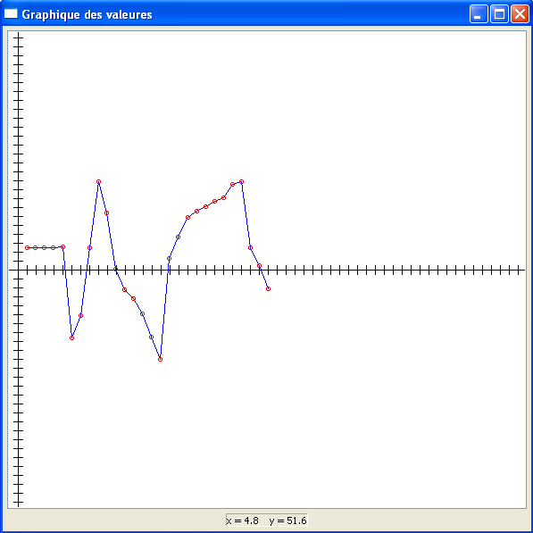
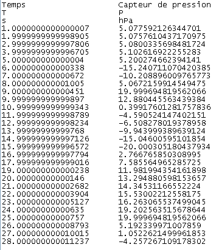

Java's Cool Guide Orphy : Interface
Ce guide vous permet de prendre en main l'interface graphique d'aquisition d'Orphy GTSII.
Presentation
L'interace se présente de la manière suivante :- une zone permettant l'acquisition manuelle
- une zone permettant l'acquisition paramétrée
- la valeur des entrées G et H de ORPHY GTS 2
- la réinitialisation de l'interface
- l'apercu graphique des relevés
- l'exportation des relevé en fichier texte
- la liste des relevés faits sur les entrées
- le bouton pour fermer l'interface

Réglages
Un menu déroulant situé sous l'affichage des entrées permet de choisir le type de sonde branché sur orphy, il est important
de le préciser pour ne pas avoir des résultats incoherents.

Acquisition manuelle
Cette partie de l'interface vous permet de faire des acquisitions manuelles des entrées.
Une acquisition manuelle se passe de la manière suivante :
- lancer le timer avec le bouton Lecture
- utiliser le bouton Acquisition manuelle pour faire un relevé
- arreter le timer quand on a fait tout les relevés nécessaires avec le bouton Stop
Acquisition paramétrée
Cette partie de l'interface vous permet de faire des acquisitions paramétrées des entrées en fonctions de differents paramètres.
Une acquisition paramétrée se passe de la manière suivante :
- appuier sur le bouton Paramétrer pour afficher la fenetre de selection
- cocher la case correspondant à l'expérience désirée
- appuier sur valider
- remplir les paramètres
- appuier sur valider
- lancer l'acquisition paramétrée avec le bouton Lancer
- attendre qu'elle se finisse, ou la stopper avec le bouton Arreter si il y a un probleme ou qu'il s'agit d'une experience à durée indéterminée

Si l'interval de temps entre deux mesure est inférieur à 0.01 secondes, l'interface utilisera alors le système de programmation
interne d'Orphy, et le timer ne sera pas disponible. L'acquisition peut alors prendre plusieurs secondes, merci de patienter.
Reinitialisation
Il est important, que se soit pour une acquisition paramétrée ou manuelle, que vous réinitialisiez l'interface avec le bouton Reinitialiser
entre chaque acquisition. Mais faites bien attention d'avoir exploité ou sauvegardé les relevé, ceux-ci seront définitivement perdus en réinitialisant
l'interface !
Apercu Graphique
Il est possible d'avoir un apercu graphique de la courbe des relevés effectués sur l'entrée G ou H d'ORPHY.
Voici un exemple d'apercu graphique :

Exportation des relevés
Il est possible d'exporter les relevés en fichier .txt compatible regressi.
Voici un exemple de fichier ainsi créé :
